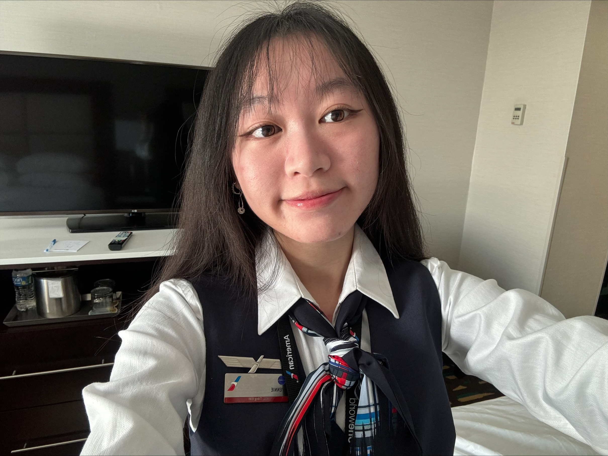

Bibliography

I was born and raised in Indianapolis, Indiana. Growing up, I played doubles tennis, beat my brother in video games, and even competed in Yu-Gi-Oh tournaments. In 2024, I graduated from Indiana University Bloomington with a bachelor's degree in psychology and another in speech, language, and hearing sciences. During my undergraduate years, I had the opportunity to study abroad in Seoul, South Korea where I honed my singing skills every night at coin karaoke. Afterwards, I spent a month in Japan where I celebrated the holidays with strangers who quickly became lifelong friends.
Those experiences sparked a passion for exploring the world and hearing people's stories, so I became a flight attendant at American Airlines after graduation. I traveled around the globe, met a lot of cool people, gained a lot of cool experiences, and ate a lot of good food. Working in the aviation industry, I developed a new curiosity: business and technology. I thought to myself, "Why do we use this system?" and "Why do we do this process when it seems so inefficient?" That desire to understand how and why things worked led me to take a leap of faith... Operation Start! Return to school for a Master's in information systems! Now I'm here basking in all it's glory. So wonderful, don't you think?
Interests
If I had to name one of my favorite things in the world, it would be dogs. The pic above is my dog Coco! I really, really like dogs. If you have a dog, please share a pic of them with me! I also enjoy playing video games a lot. I particualrly enjoy rhythm games (osu!, Chunithm, Taiko no Tatsujin to name a few) but I play a lot of other games as well. On my off days, I relax by watching anime, exploring new cafes, and roasting in bed. I am also an avid enjoyer of tea (oolong is the best!), so if you enjoy sipping tea and sharing stories, we should hang out. I've also got into fishing recently. I first did it because I thought it'd teach me the art of patience, but now I've somehow turned into that one guy that always posts their catches online. It was more fun than I anticipated.
Goals
After graduation, I hope to return to the airline industry where I can use my new skills in business and technology to improve processes and create better experiences for both employees and customers. If not aviation, I'd like to explore a career in esports, because I've always been interested in it. Aside from career goals, I am interested in living abroad again, just to experience something new! I also want to learn how to bake yummy foods, level up my billiards skills, and collect all the licenses in the world (forklift license is next). And lastly, after traveling the world, blast off into space! I want to be the first MSIS grad to step on the moon. I know, very ambitious.